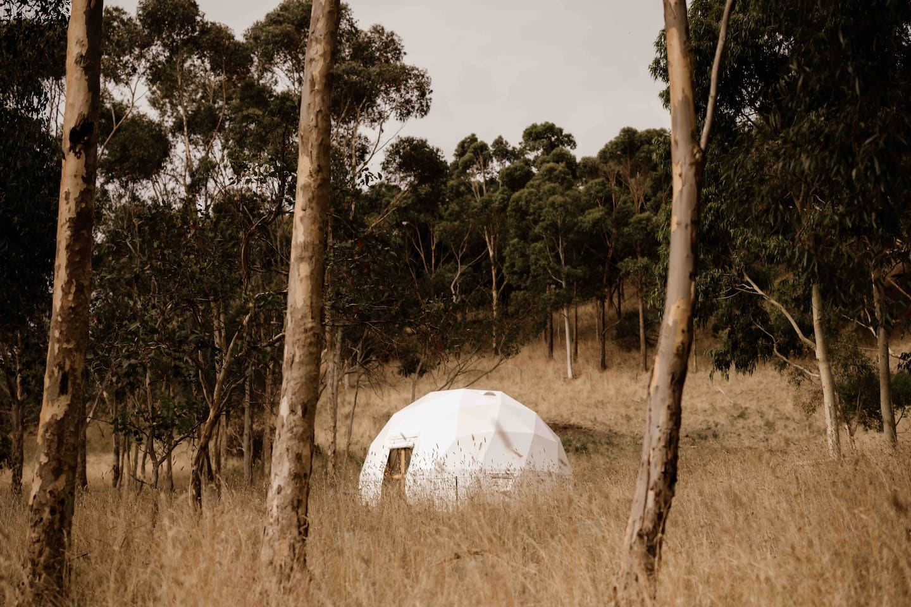
Mountain Path MeadowsThe Domes
Two timber geodesic domes at the foot of Mount Schank, off the grid, fifteen minutes from Mount Gambier.
Leave the car, walk 250 metres over old lava flows, and the domes are yours.
Dan and Rachel treat the two domes as a pair, so whoever books gets both. No wifi, no power, no heating or cooling. You get a charged battery bank, solar lights, torches and a fire pit instead.
- 2timber geodesic domes, the only ones in South Australia that Dan and Rachel know of
- 8guests across both domes: a king bed and three fold-out queens
- 250 mstroll from the car park, past eucalyptus and sheoaks
- 12acres at the base of Mount Schank, a dormant volcano
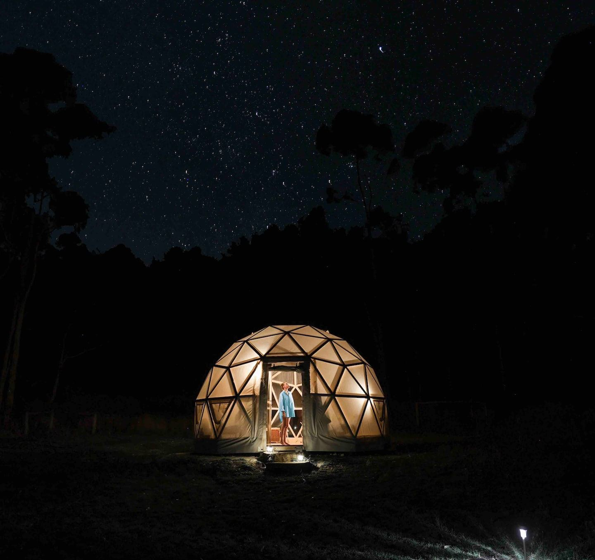
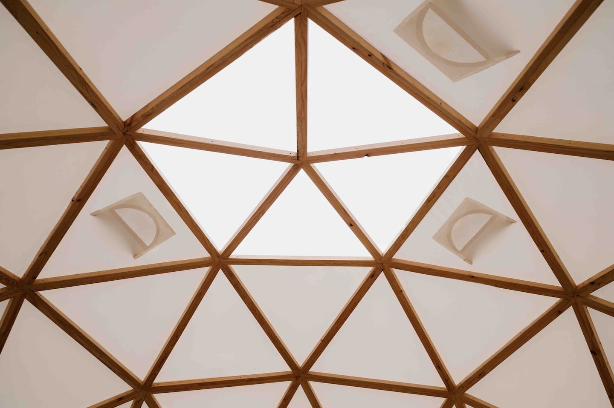
Lie back in Dome 1
The king bed sits right under the skylight.
Every edge is a timber strut.Buckminster Fuller's "Bucky Ball": a strong frame from very little material.
Then the skylight goes dark.No wifi out here. Phones still get signal, guests say.
Then the stars fill the panes."Sleeping while looking at the night sky was a highlight." Raj, Airbnb
From outside, the dome glows.Torches and solar lights are left in the dome for you.
Dome 1, and The Birdcage
Bedding, cushions and homewares were sourced from all over the world, and the hosts ask you to treat them gently. Dome 1 holds the king bed. Dome 2 has two fold-out queens and a set of golden birdcages to find.
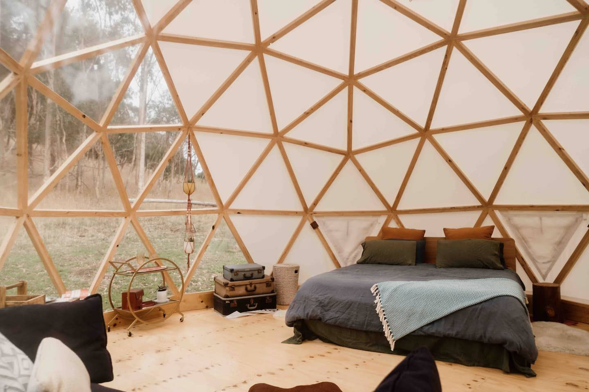
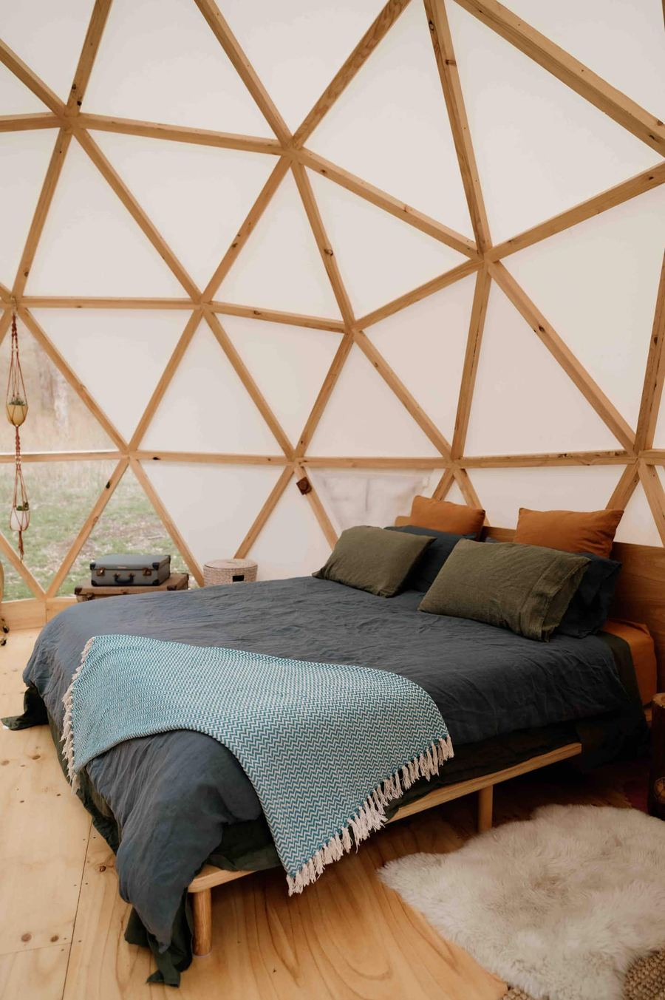
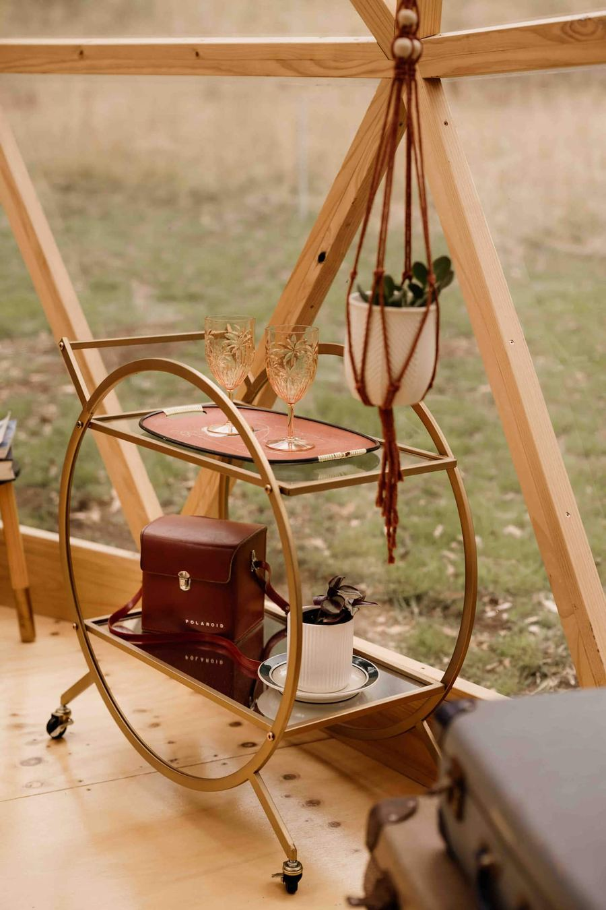
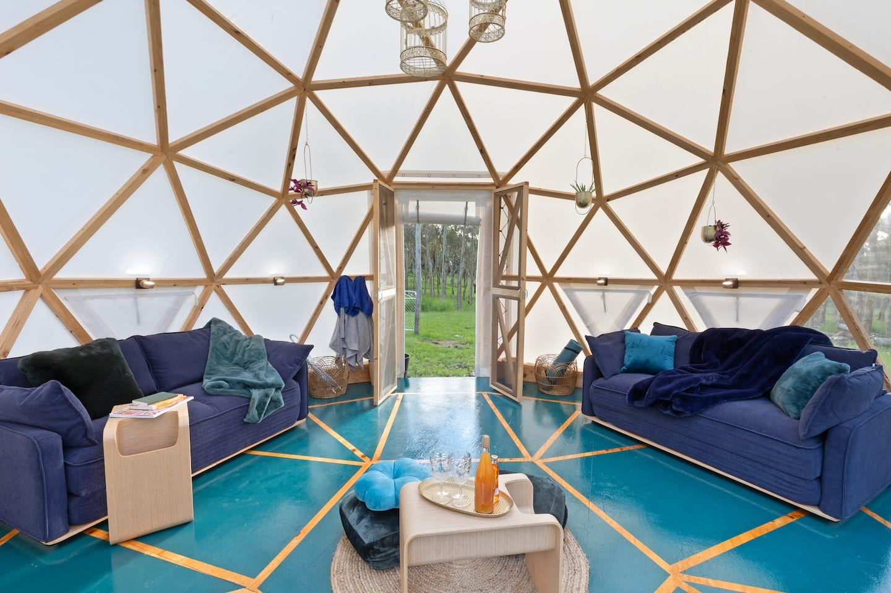
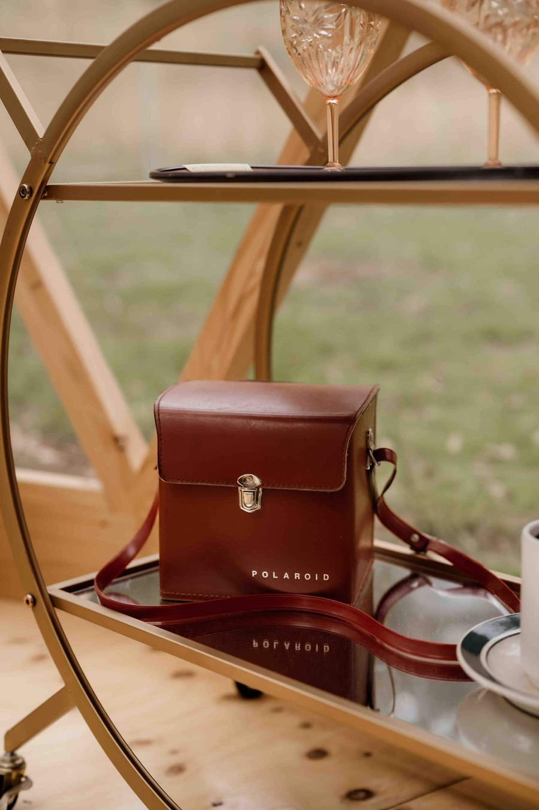
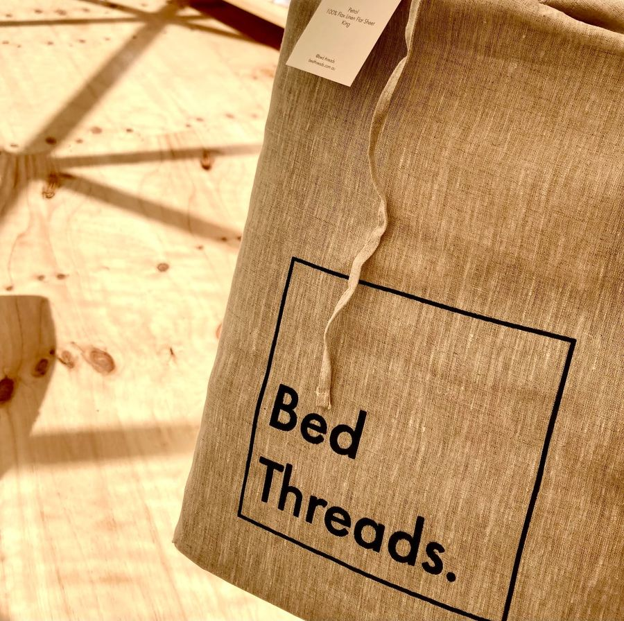
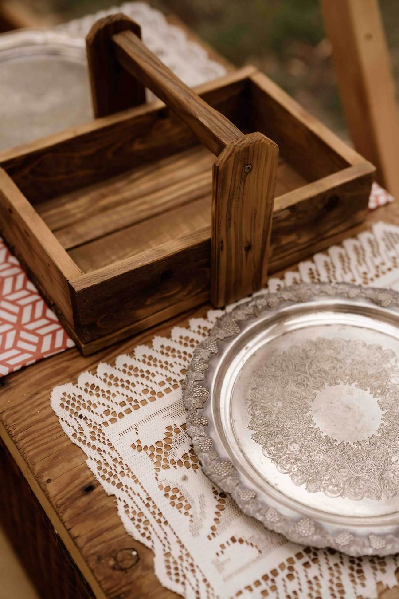
Outside is half the stay
Bring layers. The hosts list the cooler months for you: July's average low is 5.2 degrees, and the domes have no heating or cooling bar the sun and the wind.
- A fire pit by the domes
- A Camp Coffee Nook with a kettle and gas burner (bring your own pots)
- An outdoor shower and separate toilets
- Pets allowed
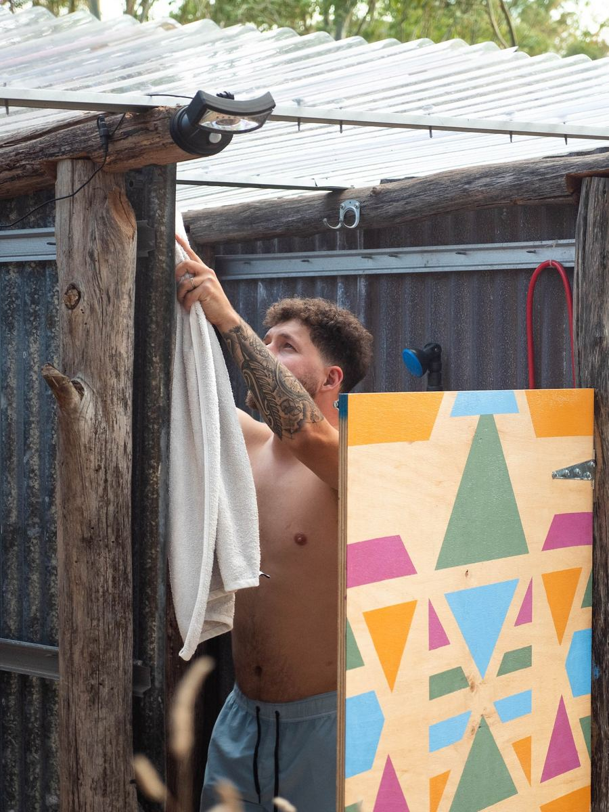
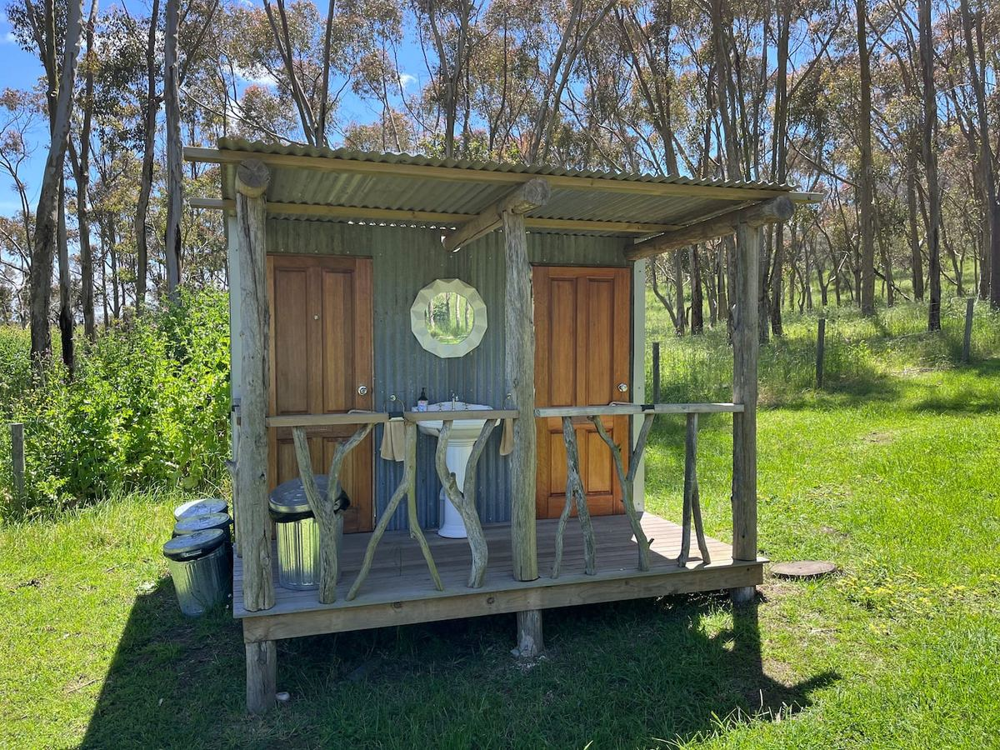
At the foot of Mount Schank
- Next doorthe heritage-listed crater of Mount Schank, with its walk to the rim
- 15 minMount Gambier
- 15 minPort MacDonnell and the beach
- NearbyCoonawarra wineries, "just up the road"
Dan runs a guided walk up Mount Schank through Airbnb Experiences. Private yoga, outdoors or in a dome, can be arranged, and the meadow hosts weddings, elopements and yoga retreats too.
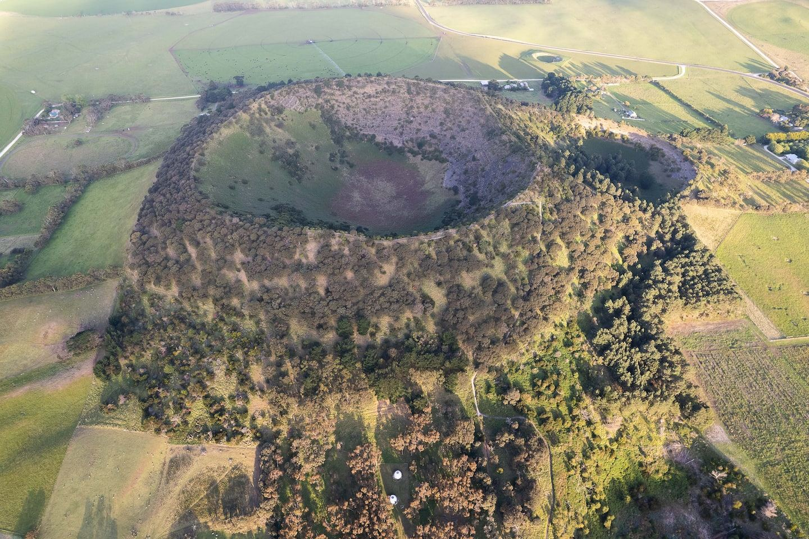
What guests say
4.88from 208 reviews on Airbnb
"Who wouldn't want to sleep inside a soccer ball at the base of a volcano?"
Colin, Airbnb
"Sitting outside with a cup of tea in the morning is bliss."
Emma, Airbnb
"Spotted a couple wallabies and farm animals!"
Patra, Airbnb
Book both domes
Pick your dates on Airbnb. One night is fine, and the price covers both domes for up to eight people. Tell Dan and Rachel when you'll arrive and they can help tote your luggage to the domes.
Gift cards and yoga retreats are on the Mountain Path Meadows website.
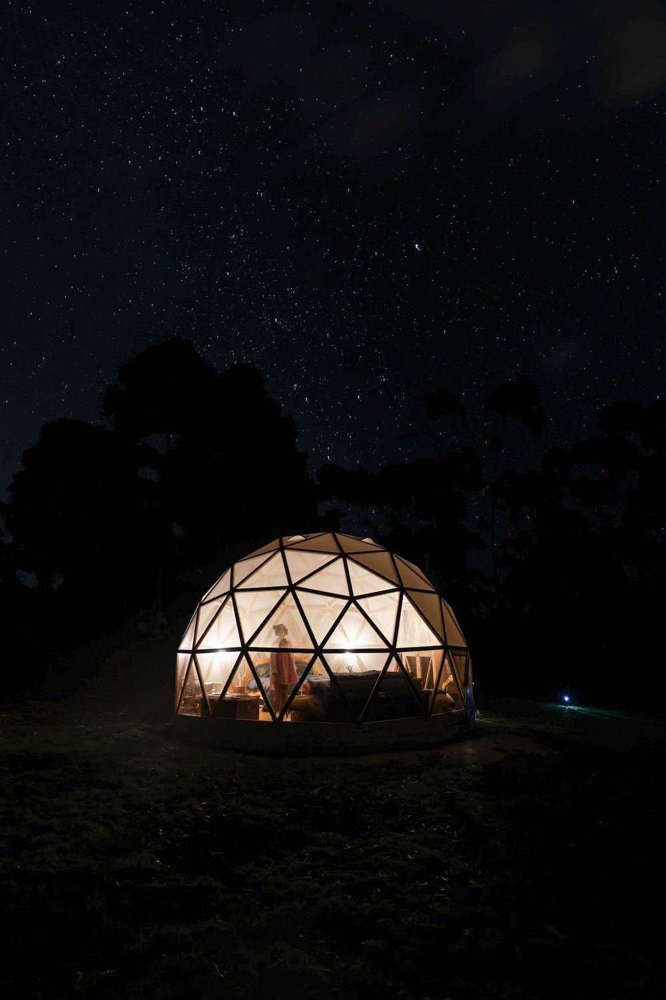